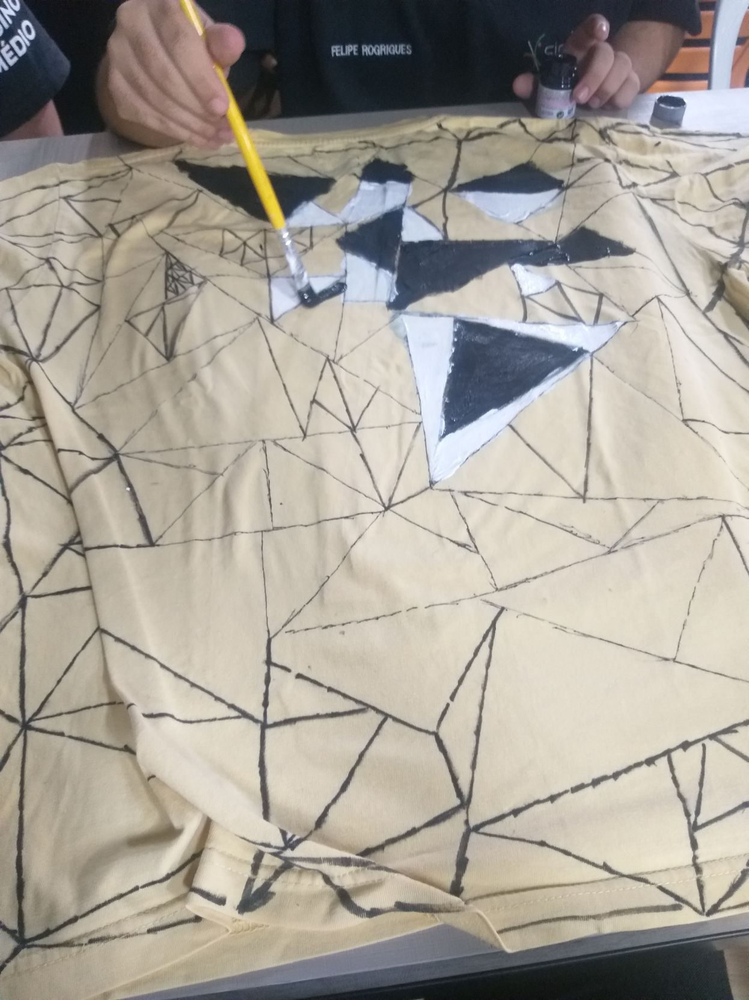

A Escolha do Tema
A escolha do tema foi realizada em forma de votação, onde dentro do tema vestuário, nós alunos demos sugestões de subtemas, onde por meio de discussões, foi decidido que ele seria de roupas/acessórios futuristas.
Realização do Projeto
Com o tema decidido, o grupo composto pelos integrantes: Gilvan, Juan, Felipe e Oliver se reuniu para decidirmos sobre o projeto, e, após algumas sugestões de roupas e acessórios, o grupo entrou em consenso e decidiu realizar o projeto de uma blusa, em sua autoria composta por fórmulas geométricas, na qual a que se destaca é o triângulo.
Com o projeto definido, começamos a pensar em quais materiais poderíamos usar, pensando também em gastar a menor quantidade possível, então fomos vendo o que poderíamos usar pra fazer cada parte, decidindo que, como materiais, utilizamos tinta de três tonalidades diferentes, sendo elas cinza, branco e um cinza escuro. Após isso, decidimos que utilizamos uma camisa velha de alguém, e para fazer os triângulos, seriam utilizados moldes de triângulos feitos em papelão.
Com os moldes de triângulos feitos, começamos a traçá-los na roupa, utilizando uma caneta mais grossa. Além dos moldes, a arte do olhômetro também foi aplicada em alguns momentos, visto que a medida que fazíamos mais triângulos, outros podiam ser facilmente observados surgindo ao redor.
À medida que fomos fazendo, mais viamos progresso, fazendo com que rapidamente terminássemos de desenhar a sombra dos moldes na parte da frente da blusa, fazendo com que ¼ do projeto estivesse concluído, fazendo com que fosse necessário apenas terminar a parte da frente e pintar ambos os lados.
Após terminarmos de fazer todas as marcações na camisa, começa a pintá-la para conseguirmos nos aproximar do resultado final, utilizamos as três tonalidades de cores citadas anteriormente, sendo elas próprias para pintar em tecidos.
Inicialmente o resultado não se aproximava muito do que queríamos, justamente por causa das tonalidades de cores obtidas, mas decidimos que iríamos continuar por causa do tempo restante para a finalização do trabalho e porque decidimos fazer a nossa própria versão da roupa, com tonalidades mais sóbrias, remetendo a atual distorção, preconceito e desigualdade encontrada dentro da nossa sociedade brasileira (kkkkkkkkkkkkkkkkkk).
OBS: Por causa de imprevistos envolvendo as aulas, o projeto não pode ser finalizado antes do fim do 1° Bimestre, pois devido a contratempos envolvendo o número de aulas que teriamos, tanto por causa de falta de organizameto quanto pela questão de feriados imendados, foi impossível a concretização do projeto.